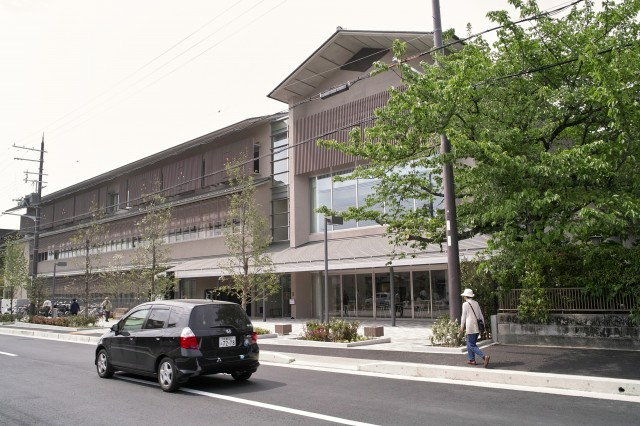
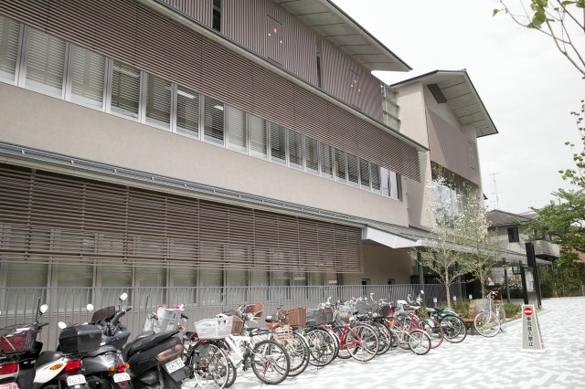
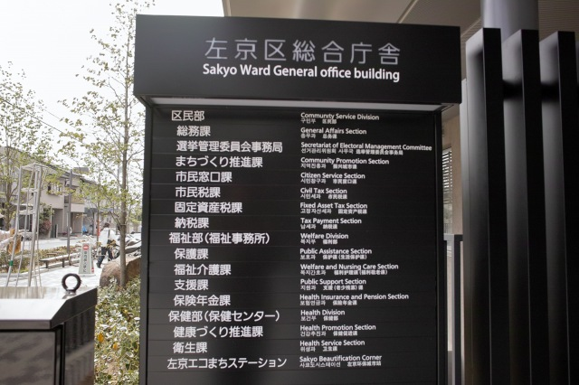
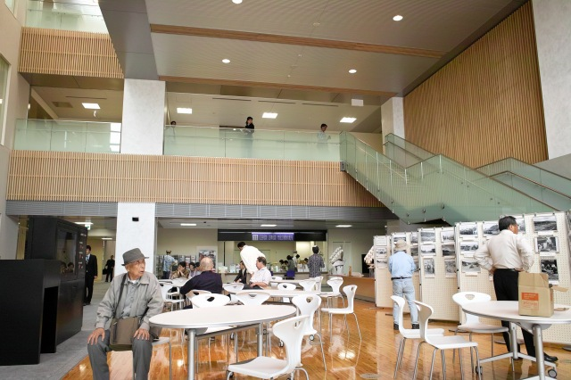
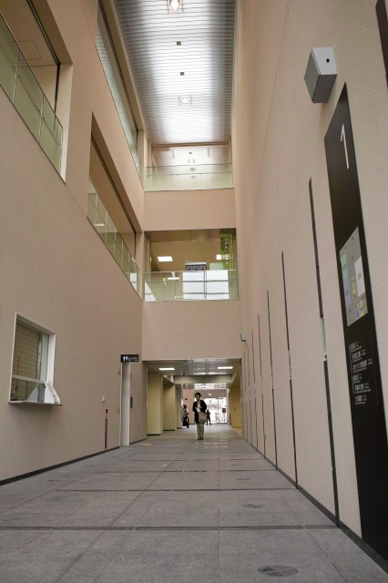
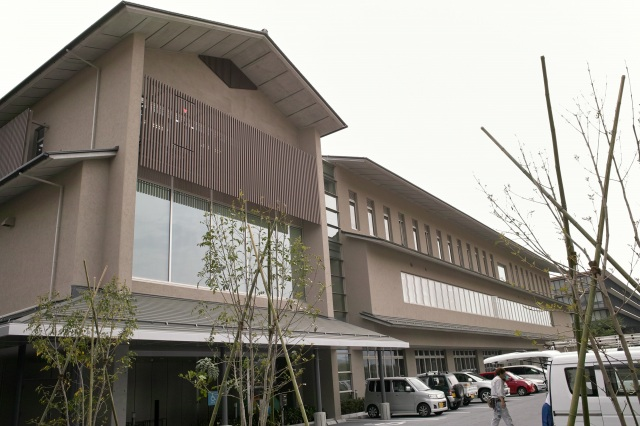
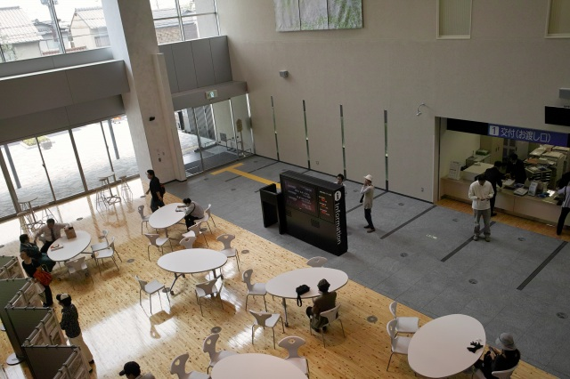
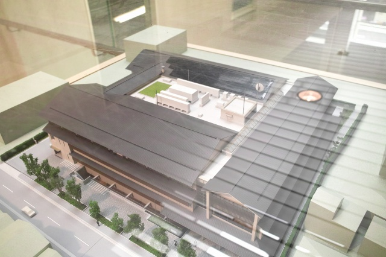

| ・ 左京区総合庁舎オープン (H23.05.06) | |||
区役所・福祉事務所・保健所を合わせた総合庁舎（詳細pdf:2.8MB）が本学の隣にオープンに移転しました。かんぽの跡地がやっと埋まったということです。まぁ、かんぽって意味が通じる学生はもう在学してないですが、かんぽーる京都って言うのがあったのです。いまはATMが学内に2つあるのですが、昔はかんぽーるの敷地にあった郵貯のATMまでいってました。あと、すぐ前にバス停もありましたね。近いうちにバス停は復活するかもしれません。 |
|||
|

北泉通からの眺め |

駐輪場は道沿い | ||
|

区役所・保健所・福祉事務所 |

入口のホール | ||
|

まっすぐ抜けていくと |

裏手は駐車場です | ||
|

入口ホールを俯瞰 |

建屋（模型）を俯瞰 | ||